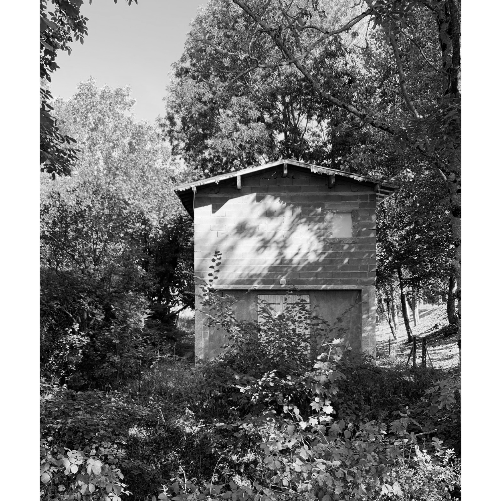
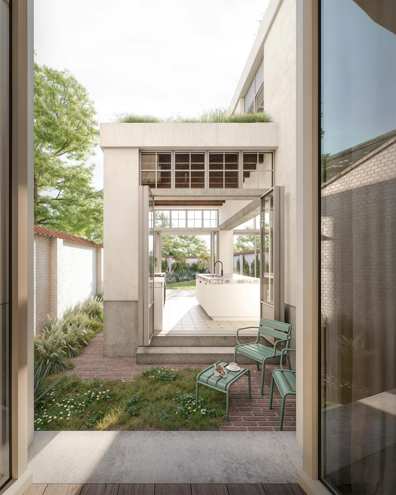
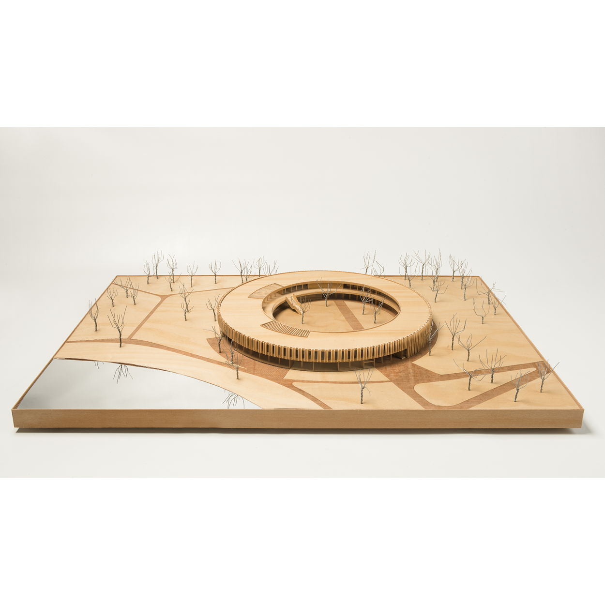
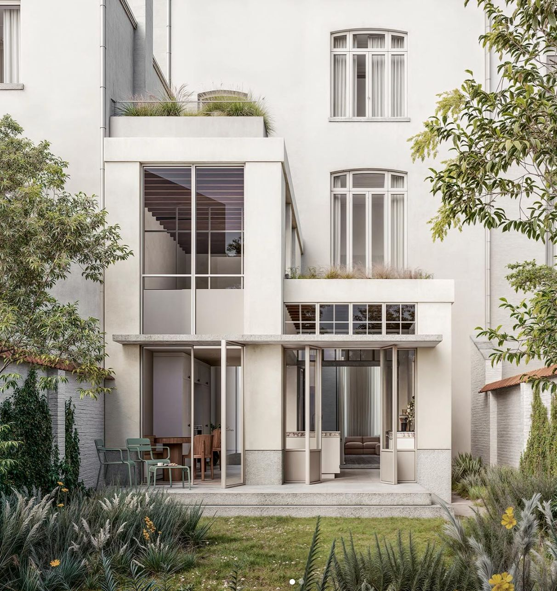
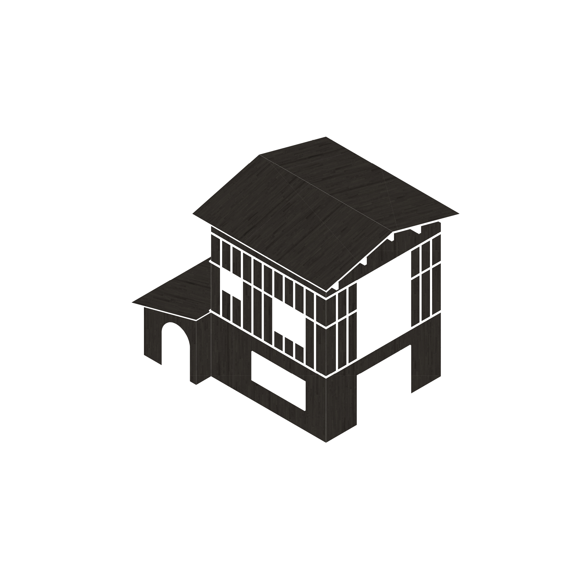
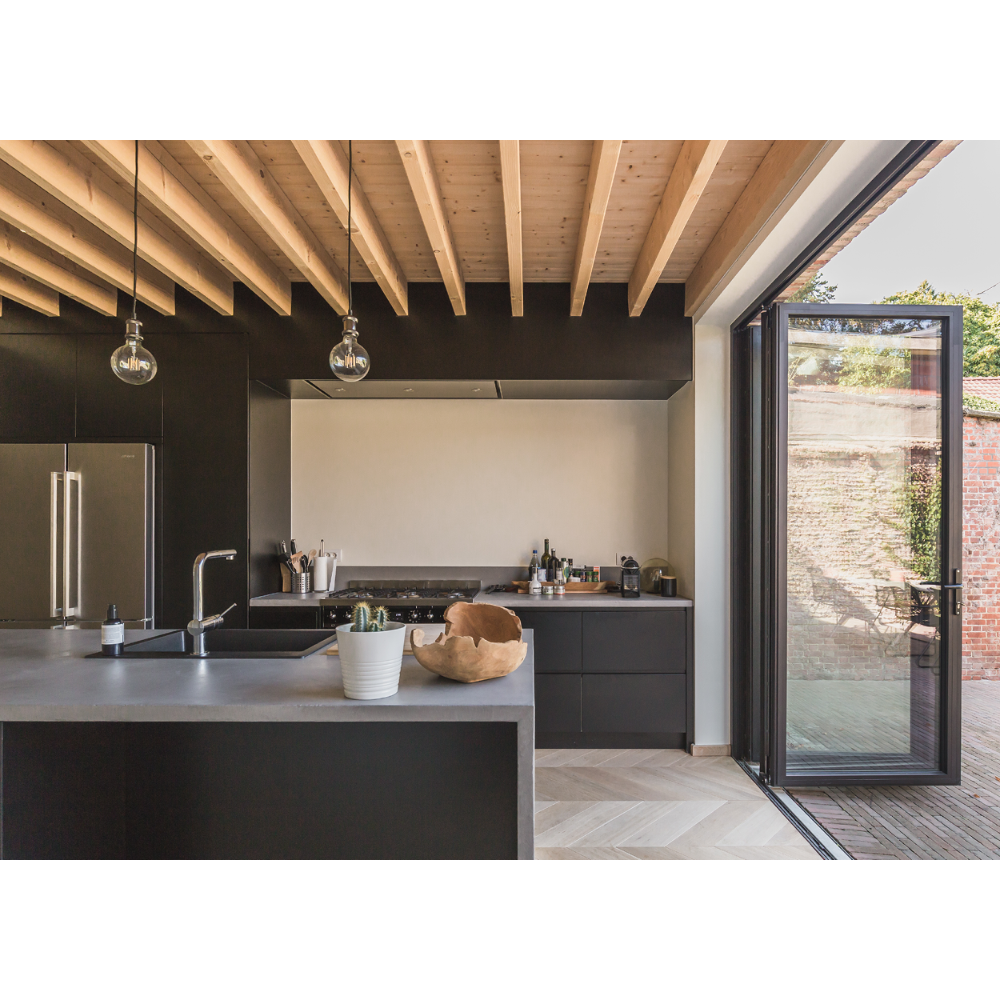
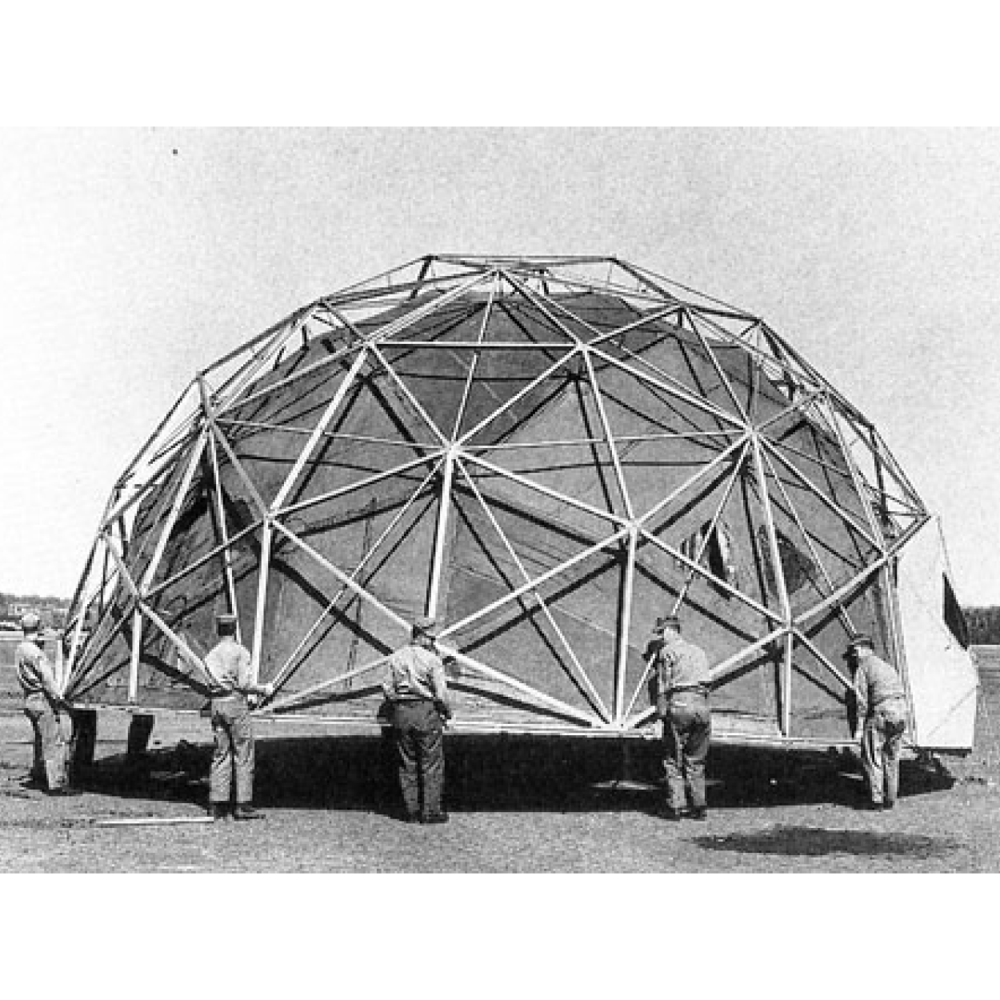
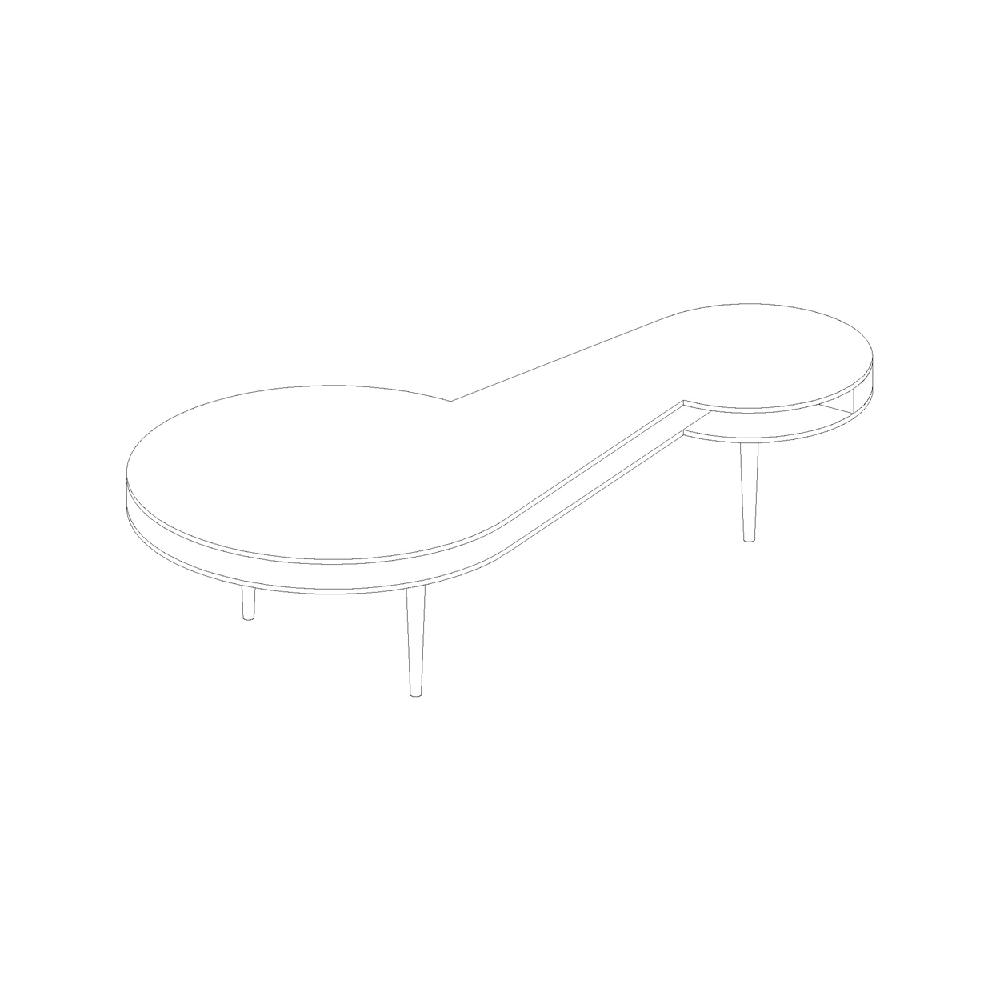
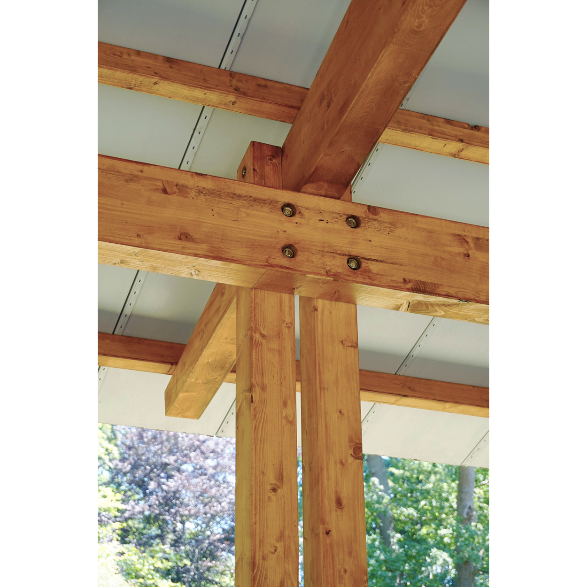

Forest House
Residential · Belgium
01
We build on what is already there.
Independent architecture studio
Atelier Bau works between architecture, landscape and the everyday. We seek the quiet strength of a clear idea—and let material, light and time do the rest.

New work · 2026

01 Architecture is about what is not built. Everything else is decoration.
02 Materials and details matter. Architecture is not fashion. Let’s not talk about style.
03 The ambition is to make life better for people. Architecture is a tool, not an end product.
04 Leave some margin for the user. Simple answers are more interesting than complex ideas.
05 Generate maximum use with minimum gesture.
06 Embrace the limitations. They lead to more creativity.
07 Find inspiration in what is already there. You never start from a blank page.
08 Make sure buildings can grow old.

Residential · Belgium
01
Renovation · France
02
Residential · Belgium
03
Hospitality · Kenya
04
Residential · Belgium
05
Public space · Belgium
06We approach each project as a specific conversation—with its site, its history, its climate and the people who will inhabit it.
From intimate transformations to collective places, our work is precise without being rigid, expressive without excess.
Have a site, a question,
or an impossible idea?